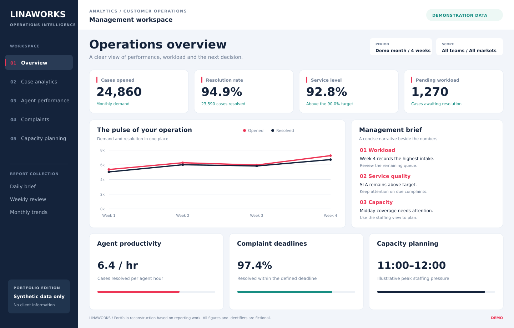
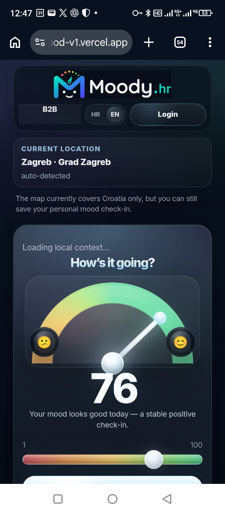

INDEPENDENT DATA & DIGITAL STUDIO
Clear data.
Smarter business.
Real impact.
Reporting, connected workflows and practical AI
for customer service and operations teams.

01 / THE EXPERTISE
Better decisions.
Less friction.
Business understanding meets hands-on engineering.
From the first question to a working solution.
Data &
reporting.
See performance clearly. Connect spreadsheets, automate recurring reports and turn data into decisions.
Power BI · Tableau · Excel · Google Sheets ↗02CRM &
automation.
Bring your workflows, business rules and data together in tools built around the way your team works.
Salesforce · LWC · Apex · Apps Script ↗03Practical
AI consulting.
Find a useful opportunity, build a focused pilot and measure the outcome before expanding.
Agentforce · AI assistants · Integrations ↗02 / SELECTED WORK
Products I built.
Three distinct products.
From community workflows to work in the field.

A community, connected.
Public content and role-based tools for club operations.


Your data. In the field.
A custom app for maps, records, terrain and navigation.
self-awareness.

Your day, in context.
Personal check-ins meet local signals.
03 / BEHIND LINAWORKS
Business context.
Hands-on delivery.
Darko Jeras · Zagreb, Croatia
Experience leading customer service teams, building operational reports and automating everyday work. LinaWorks brings that operational perspective to data, CRM, AI and custom digital products.
Explore the approach ↗